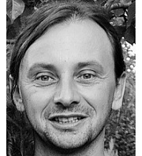
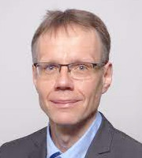

Arclabor (Németh Kornél)
Főbb kutatási témák: a veleszületett prozopagnózia, arcfelismerés és olvasási képességek kapcsolata
Módszerek: viselkedéses paradigmák, neuropszichológiai eljárások, szemmozgás-követés, EEG
Neuropszichológia és Megismerés Kutatócsoport (Demeter Gyula)
Főbb kutatási témák: agysérült betegek kognitív funkciói, prospektív emlékezet, érzelemfeldolgozás és társas kogníció
Módszerek: neuropszichológiai eljárások, viselkedéses paradigmák
Kísérleti Pragmatika Kutatócsoport (Babarczy Anna)
Főbb kutatási témák: pragmatika és tudatelmélet, pragmatikai fejlődés, klinikai pragmatika
Módszerek: viselkedéses paradigmák, korpuszelemzés, szemmozgás-követés
Klinikai Idegtudomány Kutatócsoport (Kéri Szabolcs)
Főbb kutatási témák: neuropszichiátriai kórképek kognitív mechanizmusai és idegrendszeri háttere, kapcsolat a kognitív zavar és a molekuláris biológiai mechanizmusok között
Módszerek: klinikai tesztek, az érzékelés és az emlékezet vizsgálata, strukturális agyi képalkotás, molekuláris biológiai technikák a klinikai kutatásban
Pszicholingvisztika Kutatócsoport (Lukács Ágnes)
Főbb kutatási témák: kognitív folyamatok szerepe a tipikus és atipikus nyelvelsajátításban, egyéni különbségek az implicit tanulásban
Módszerek: viselkedéses paradigmák, neuropszichológiai eljárások
Vizuális Idegtudomány Kutatócsoport (Zimmer Márta)

Főbb kutatási témák: vizuális észlelés idegrendszeri alapjai, arcészlelés, tárgykategorizáció
Módszerek: EEG, fMRI, transzkraniális egyenáram- ingerlés
Figyelem és Emlékezet Kutatócsoport (Pajkossy Péter)
Főbb kutatási témák: Figyelmi és emlékezeti folyamatok kölcsönhatásai, a két rendszer deficitjeinek vizsgálata
Módszerek: viselkedéses paradigmák, szemmozgás-követés, pupillometria